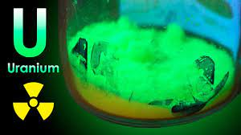
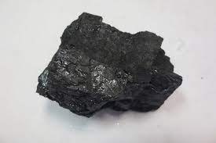
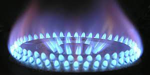
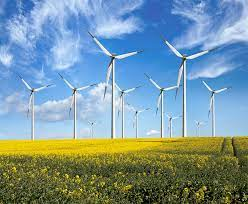
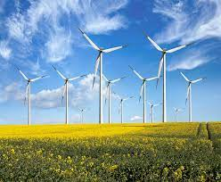

Energy Resources
==>Energy is required for all activities. It is needed
to cook, to provide light and heat, to propel
vehicles and to drive machinery in industries.
Energy can be generated from fuel
minerals like coal, petroleum, natural gas,
uranium and from electricity.
==>Energy
resources can be classified as conventional
and non-conventional sources. Conventional
sources include: firewood, cattle dung cake,
coal, petroleum, natural gas and electricity
(both hydel and thermal).
==>Non-conventional
sources include solar, wind, tidal, geothermal,
biogas and atomic energy.
==>Firewood and cattle
dung cake are most common in rural India.
==>According to one estimate more than 70 per
cent energy requirement in rural households
is met by these two ; continuation of these is
increasingly becoming difficult due to
decreasing forest area.
==>Moreover, using dung
cake too is being discouraged because it
consumes most valuable manure which could
be used in agriculture.



 
